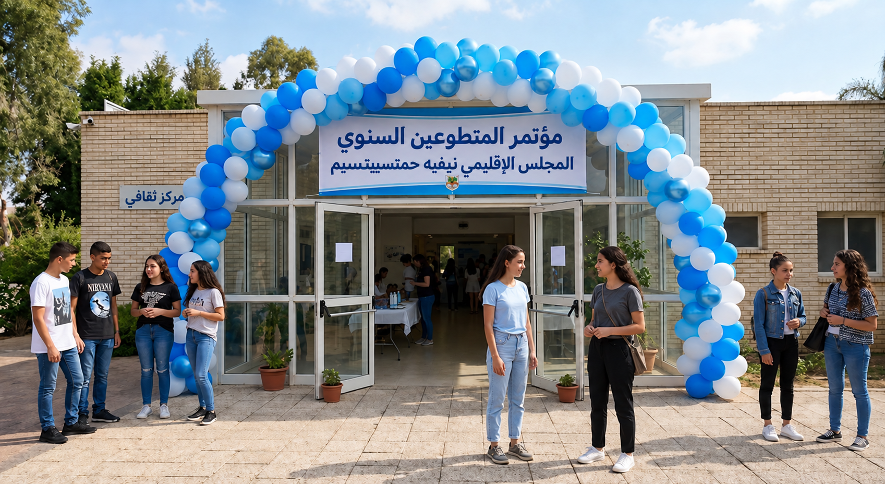
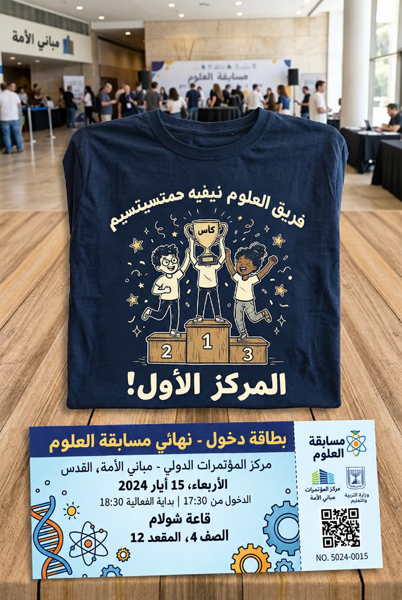
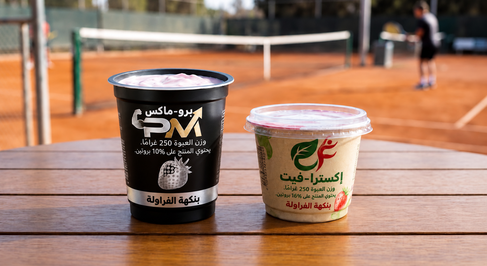
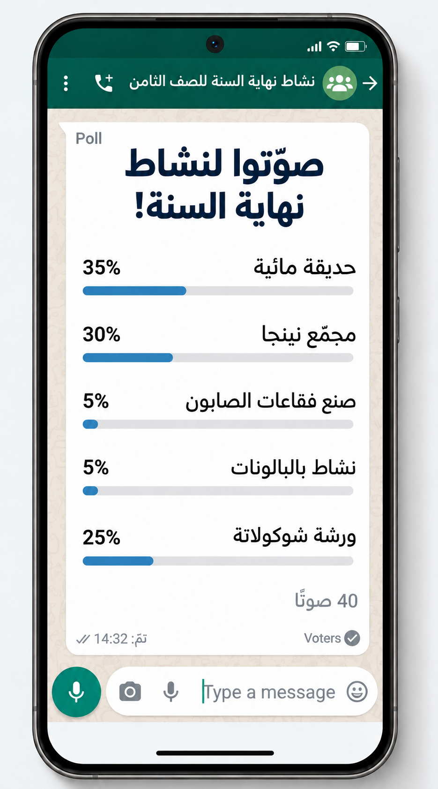

أنهينا مرحلة التعلم، سننتقل إلى التمرين الأول ونجيب عن
5 أسئلة
يجب الإجابة بشكل صحيح عن 4 أسئلة على الأقل.

في نادي الشبيبة تسجّلَ 60 متطوعًا.
مديرة النادي مستعدة لتنظيم يوم ترفيهي للمتطوعين،
لكن فقط بشرط حضور 40 متطوعًا على الأقل.
سجّلَ للنشاط %65 من المتطوعين.
اكتشفنا أن 39 متطوعًا سجلوا لليوم الترفيهي.
أ. لائموا المعطيات لجدول التناسب:
| عدد المسجلين | النسبة المئوية |
|---|---|
|
|
|
|
|
|
في نادي الشبيبة تسجّلَ 60 متطوعًا.
مديرة النادي مستعدة لتنظيم يوم ترفيهي للمتطوعين،
لكن فقط بشرط حضور 40 متطوعًا على الأقل.
سجّلَ للنشاط %65 من المتطوعين.
اكتشفنا أن 39 متطوعًا سجلوا لليوم الترفيهي.
كتبنا المعطيات في جدول التناسب.
| عدد المسجلين | النسبة المئوية |
|---|---|
| x | 65% |
| 60 | 100% |
ب. كم متطوعًا سجلوا لورشة القيادة؟
في نادي الشبيبة تسجّلَ 60 متطوعًا.
مديرة النادي مستعدة لتنظيم يوم ترفيهي للمتطوعين،
لكن فقط بشرط حضور 40 متطوعًا على الأقل.
سجّلَ للنشاط %65 من المتطوعين.
اكتشفنا أن 39 متطوعًا سجلوا لليوم الترفيهي.
ت. هل ستوافق المديرة على إقامة اليوم الترفيهي؟
![أربعة مرشدين ومرشدات شباب بسنّ الإعدادية (الصف الثامن)، يرتدون زيّ حركة الشبيبة "أجنحة الكريمبو" (بلوزات حركة زرقاء فاتحة عليها شعارات وبناطيل عمل زرقاء)، يحمّلون معًا معدات في حاوية زرقاء ضخمة حجمها 200 متر مكعب. يظهر على الحاوية اسم الحركة بالعبرية والإنجليزية، والحجم "200 متر مكعب". داخلها وخارجها تظهر معدات تخييم كثيرة تشمل أكوامًا من الخيام المطوية، صناديق بلاستيكية ومعدنية مكتوب عليها "معدات طبخ"، وحقائب إسعافات أولية حمراء. يقام النشاط في ساحة موقف إسفلتية، وفي الخلفية يظهر مبنى الحركة ذو الطابقين بلون أصفر-برتقالي وعليه أعلام إسرائيل ولافتة "أجنحة الكريمبو"".](assets/img/standard2.jpeg)
استعدادًا للمخيم الصيفي لحركة "أجنحة الكريمبو"،
حمّلَ طلاب الصف الثامن المعدات على حاوية شاحنة.
الحجم الإجمالي للحاوية هو 200 متر مكعب.
أكملوا عمود الحجم (متر مكعب) في الجدول بحسب النسب المئوية المعطاة.
استعينوا بتحويل النسبة المئوية إلى كسر بسيط/عشري.
| نوع المعدات | النسبة المئوية | الحجم (متر مكعب) |
|---|---|---|
| طبخ ومطبخ | 45% | |
| خيام ومباني | 40% | |
| معدات الحبال والسلامة | 12% | |
| إسعاف أولي | 3% |

تأهّل فريق العلوم إلى النهائي القطري! طلبت مركّزة الصف الثامن 150 تذكرة لتشجيع الفريق.
%80 من التذاكر كانت مخصصة لطلاب المدرسة وتشمل بلوزات.
بقية التذاكر، وهي أرخص ولا تشمل بلوزات، فخُصصت للمعلمين المرافقين.
في صباح النشاط حضر 118 طالبًا و-32 معلمًا.
ما هي المشكلة التي ستواجهها مركّزة الصف عندما توزع الـ 150 تذكرة
على 118 طالبًا و-32 معلمًا الذين حضروا؟
اختاروا جميع الإجابات الصحيحة.
أنهى عامر تمرين تنس وأراد شراء المنتج الذي يحتوي على أكبر كمية من البروتين (بالغرامات). وهو محتار بين نوعين:
برو-ماكس: عبوة وزنها 250 غرام. يحتوي المنتج على %10 بروتين.
إكسترا-فيت: عبوة وزنها 150 غرام. يحتوي المنتج على %16 بروتين.

أي منتج يجب أن يختار عامر ولماذا؟
استخدموا طريقة تحويل النسبة المئوية إلى كسر بسيط/عشري.
بمناسبة رحلة نهاية السنة، فُتح استطلاع عبر مجموعة الواتساب للصف الثامن.
أجاب عن الاستطلاع 80 طالبًا وطالبة.
لخّص ممثل مجلس الطلاب النتائج وكتب في المجموعة:
"الخيارات الأكثر تفضيلًا للرحلة: بارك مائي - %35 من المشاركين، مجمع نينجا - %30 من المشاركين.
حصلت بقية الخيارات على أصوات أقل".

بالاستناد إلى رسالة ممثل مجلس الطلاب، هل العبارات التالية صحيحة أم غير صحيحة؟
لأن %35 إضافيين من الطلاب اختاروا خيارات أخرى.